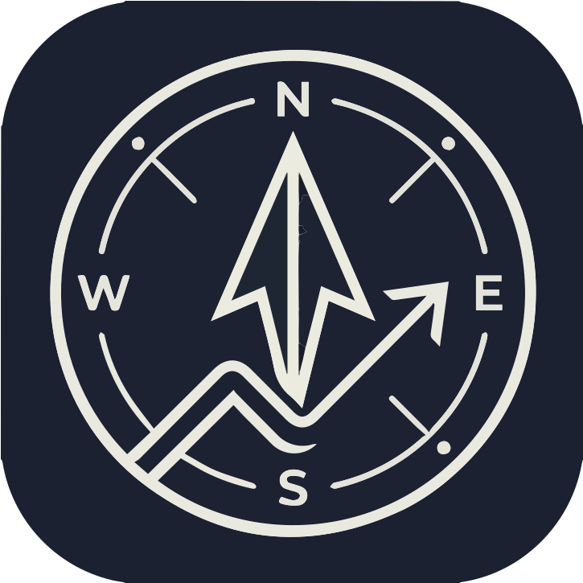

PositionLabPrivacy Policy
Last updated: September 1, 2026
PositionLab is designed to keep your trading journal and calculator data primarily in your browser. Depending on the features you use, data may also be stored in your own Google Drive through Google OAuth.
What we store: trade entries, capital records, calculator preferences, strategy/verdict lists, broker settings and interface preferences that you enter or configure.
Where data is stored: browser storage on your device, and optionally a JSON data file in your Google Drive when Drive Sync is connected. PositionLab does not need your Google account password.
Google services: Drive Sync uses Google OAuth and Google Drive APIs. Google may process authentication and service data according to Google's own policies. PositionLab only requests the permissions needed by the integration.
Access tokens: Google OAuth access tokens are held in memory during the active browser session and are not intentionally written to PositionLab local storage.
Third parties: The site loads selected libraries and fonts from third-party CDNs and Google services. Those providers may process technical request data according to their own policies.
Analytics and advertising: PositionLab does not intentionally sell personal data or use your journal data for advertising.
Data control: You can disconnect Drive Sync, delete records from the app, clear browser site data, or remove the PositionLab data file from your Google Drive.
This policy is written for the current client-side implementation and is not legal advice. Review it with qualified counsel before commercial deployment.